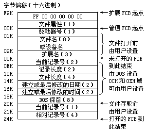

图7-1 文件控制块的结构
同时还可以看到无论是普通FCB还是扩展FCB都有"打开"与"未打开"之分，就普通FCB而言，从偏移00H开始至偏移0CH是未打开的FCB，"未打开"的含义就是说这部分数据要在执行"打开文件"操作之前就要填好。换句话说，这部分信息要由我们编制程序时定义出来。
DOS系统提供了一个名为"ATTRIB"的命令，这个命令用于设置文件的属性，利用这个命令
| -170- | PC机汇编语言实战精解 | ||||||||||||||||||||
| 7．2 文件控制块 | |||||||||||||||||||||
| 7．2．1 文件控制块的结构 | |||||||||||||||||||||
| 文件控制块，英文是File Control Block，简写为FCB，它实际上是一组具有固定格式的数据。我们前面提到过当我们打开一个文件后DOS要取得这个文件的特征信息，文件控制块就是由这些信息组成的。所以我们说文件控制块的作用就是操作系统和要处理的文件之间相联系的一个纽带，操作系统要依靠FCB中的数据完成对文件的读或写操作。DOS的文件控制块的结构如图7-1所示： | |||||||||||||||||||||
|  图7-1 文件控制块的结构 |
通过图7-1可以看到，FCB具有"普通"和"扩展"两种类型，扩展FCB就是在普通FCB前面增加了7个字节的数据，在这7个字节中首字节是－1，末字节表示文件的属性，其余5字节均为0。这里就出现了一个"文件属性"的概念，我们在后面会详细加以讨论。 同时还可以看到无论是普通FCB还是扩展FCB都有"打开"与"未打开"之分，就普通FCB而言，从偏移00H开始至偏移0CH是未打开的FCB，"未打开"的含义就是说这部分数据要在执行"打开文件"操作之前就要填好。换句话说，这部分信息要由我们编制程序时定义出来。 |
||||||||||||||||||||
| 这并不难理解，我们要打开或建立一个文件，自然要首先给出文件名、属性以及这个文件所在的驱动器号等数据，这样操作系统才能知道我们要处理的对象是谁。从偏移0CH至偏移24H是打开的FCB，可以想到这部分数据是在执行"打开"操作之后由操作系统填入的。我们前面说过执行打开操作的意义就是让操作系统寻找被处理文件并且取得这个文件的特征信息，这些信息就存放在打开的FCB中。在这里又出现了两个新知识点--记录块和记录。下面我们就来讨论一下这几个新知识点。 | |||||||||||||||||||||
| 7．2．2 文件的属性 | |||||||||||||||||||||
|
在现实生活中我们所看到的文件是具有不同性质的，比如有一些文件在封套上写有"保密"的字样，这样的文件就不是随便哪个人就可以查阅。磁盘中的文件同样具有这样的性质，大家可能知道磁盘上有些文件是"隐含"的，这样的文件用DIR命令列不出文件名。还有一些文件虽然可以列出名字，但是却不能用DEL命令将其删除。 DOS系统提供了一个名为"ATTRIB"的命令，这个命令用于设置文件的属性，利用这个命令 |
|||||||||||||||||||||
| Copyright © 2004-2005 Chunk Lee | www.nucstorm.com | ||||||||||||||||||||